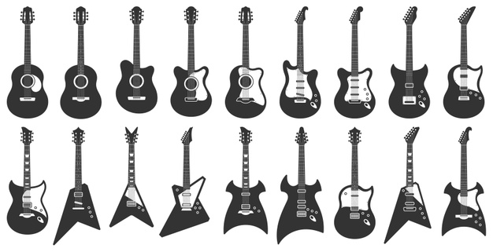

IL ROCK
Il termine Rock è spesso usato come forma abbreviata di rock and roll. Viene però utilizzato più frequentemente per indicare la varietà di stili musicali nati dall'evoluzione del rock and roll. Rock significa letteralmente dondolare, oscillare; Roll invece rotolare. è quindi con l'unione di queste parole che si definisce perfettamente il nuovo genere musicale nato negli Stati Uniti negli anni Cinquanta del Novecento. Si tratta dell'evoluzione di blues, bluegrass, country, R&B, jazz e gospel; è quindi chiaro che si tratti di musica popolare, da ballo che prenderà il sopravvento sugli altri stili musicali dell'epoca. Tra i principali esponenti è necessario ricordare Elvis Presley, Little Richard, Jerry Lee Lewis, James Brown, Janis Joplin, Tina Turner, Jim Morrison, Johnny Rotten, Prince e Bo Diddley. Nel corso degli anni Sessanta, non più solo negli Stati uniti ma anche nel Regno Unito, il rock and roll si evolve grazie anche allo sviluppo tecnico della chitarra elettrica, che sarà poi lo strumento su cui il genere si incentrerà. Da questo momento in avanti la musica rock si diramerà in una enorme varietà di sottogeneri: si è mescolata con il blues per dar vita al blues rock e al southern rock, poi con il jazz e altre forme di musica orchestrale per creare la fusion e il rock progressivo. Nel corso degli anni sono nati altri generi derivati come il pop rock, l'hard rock, il rock psichedelico, il glam rock, l'heavy metal e il punk rock. Gli anni Ottanta hanno visto sbocciare il filone new wave, l'hardcore punk, il rock elettronico e il rock alternativo, mentre negli anni Novanta si è assistito alla diffusione del grunge, del britpop, dell'indie rock e del post-rock. Le sonorità del rock sono caratterizzate prevalentemente dall'utilizzo di strumenti elettrici, in particolare la chitarra elettrica, accompagnata da basso elettrico e batteria. La linea di confine che separa il generico ribellismo adolescenziale del rock 'n' roll di Elvis Presley e la nuova consapevolezza del rock come forma d'arte a sé venne tracciata all'alba degli anni Sessanta da Bob Dylan. Bob Dylan nasce il 24 maggio 1941 a Duluth, città nello stato del Minnesota. è un cantautore, compositore, musicista e poeta statunitense. Nel 2016 riceve il premio Nobel per la letteratura, dopo aver vinto l'Oscar alla miglior canzone e il Premio Pulitzer. Nei primi anni Sessanta il blues venne relegato al ruolo di musica ascoltata e suonata dalla parte più povera della popolazione, quella dei lavoratori. A seguito dell'invasione britannica, gruppi come i Rolling Stones diedero nuovo lustro al genere, iniziando a sperimentare sonorità che univano i suoni ruvidi del Chicago Blues con l'energia elettrica del Rock. Nacque il cosiddetto Blues Rock. Eric Clapton fu uno dei maggiori esponenti del genere.
Rock psichedelico
Il rock psichedelico è un sottogenere della musica rock sviluppatosi contemporaneamente negli Stati Uniti e nel Regno Unito fra gli anni Sessanta e Settanta. Si ispira alle esperienze di alterazione della coscienza derivanti dall'uso di sostanze psichedeliche come cannabis, funghi allucinogeni, mescalina, e soprattutto LSD. Le band che hanno creato il rock psichedelico sono principalmente: The Doors, The Byrds, Grateful Dead, i leggendari Pink Floyd ed infine i Jefferson Airplane.
Progressive rock
Il rock progressivo è un'evoluzione del rock psichedelico britannico e diffusosi in Germania, Italia e Francia nel corso degli anni sessanta e settanta. Conobbe il suo picco di popolarità nella prima metà degli anni settanta con l'affermazione, anche commerciale, di gruppi britannici quali: Pink Floyd, Genesis, Yes, King Crimson, Emerson, Lake & Palmer, Gentle Giant, Van Der Graaf Generator, Camel e Jethro Tull.
Jazz Rock
Chiamato anche Fusion è un genere musicale emerso alla fine degli anni Sessanta che combina elementi di jazz, rock e funk. Tra i principali esponenti, oltre a vari gruppi, troviamo Miles Davis (noto jazzista) con l'album Bitches Brew, definì e diede vita al genere fusion.
PFM
La Premiata Forneria Marconi (nota anche come PFM) è un gruppo musicale rock progressivo italiano formato nel 1971. Tra i gruppi italiani rock progressivo degli anni Settanta, la Premiata Forneria Marconi è stata l'unica a ottenere successo fuori dai confini nazionali. All'epoca fu tra i pochi complessi italiani a entrare nella classifica degli album nella celebre rivista statunitense Billboard. Il gruppo nasce con il nome "Quelli" per poi diventare "Krel" e infine "Premiata Forneria Marconi". Il quartetto originario, con l'incontro di Mauro Pagani, flautista e violinista noto soprattutto grazie a Fabrizio De Andrè (con il quale collaborerà in svariati album, tra i più noti Creuza de ma), si sviluppa artisticamente sviluppando un nuovo linguaggio musicale. Decisero di lavorare con la "Numero Uno", la casa discografica fondata da Lucio Battisti e Mogol una volta abbandonata la Ricordi. Nel 1971 uscì il primo disco della Premiata Forneria Marconi, il singolo La carrozza di Hans/Impressioni di settembre, seguito all'inizio del 1972 dall'album Storia di un Minuto. Il brano Impressioni di settembre (di Mussida e Pagani su testo di Mogol) divenne presto uno dei loro cavalli di battaglia e un classico della musica italiana. Nel 1978 la PFM incontrò nuovamente Fabrizio De André (con cui aveva collaborato al tempo de I Quelli per la realizzazione dell'album La buona novella) e con il cantautore genovese realizzò un tour da cui verrà tratta una fortunata coppia di album dal vivo (celeberrima la versione, arrangiata in chiave progressive, de Il pescatore). La Premiata Forneria Marconi è quindi simbolo musicale del rock italiano nel mondo, anche se molto spesso, l'Italia si dimentica di avere un gruppo così importante.